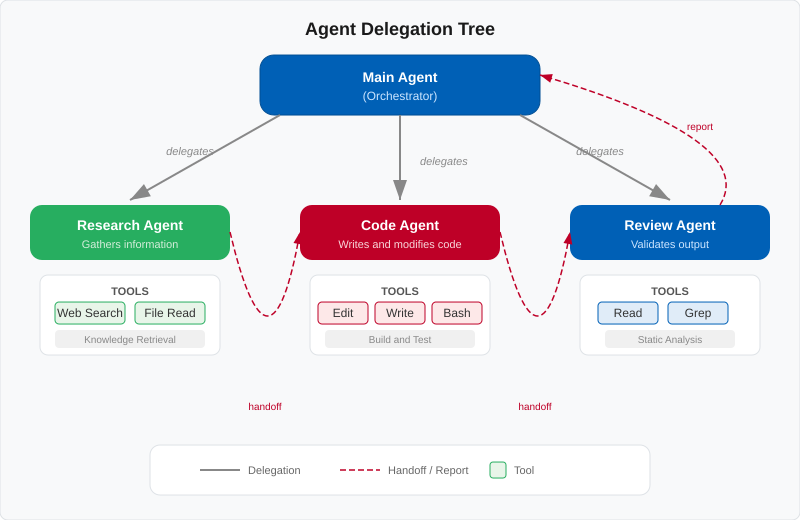

Chapter 16: Agents — Let It Delegate #
"The best leaders don't do all the work — they know who to ask."
— Management proverb, repurposed for AI
📖 Estimated read time: 15 minutes
What You'll Learn #
- What agents are and how they differ from regular NeamCode interactions
- How to use each of the four built-in agents: Explore, Plan, Review, and Test
- How delegation works under the hood
- When NeamCode spawns agents automatically (and when to invoke them yourself)
- Pro tips for getting the most out of multi-agent workflows
16.1 What Are Agents? #
When you chat with NeamCode normally, you're talking to a single AI assistant that reads your files, writes code, and runs commands. That works great for most tasks. But some jobs are too big or too specialized for a single conversation thread.
Agents are specialized sub-assistants that NeamCode can spin up to handle focused tasks. Each agent:
- Has its own independent context window (it doesn't share memory with your main session)
- Is optimized for a specific type of work (research, planning, reviewing, or testing)
- Reports its findings back to the main session when finished
- Can be invoked manually by you or automatically by NeamCode
Think of it like this:

┌─────────────────────────────────────┐
│ Your Main Session │
│ │
│ "Refactor the auth module" │
│ │ │
│ ├──► [ Explore Agent ] │
│ │ Researches codebase │
│ │ Reports back │
│ │ │
│ ├──► [ Plan Agent ] │
│ │ Creates step-by-step │
│ │ Reports back │
│ │ │
│ ├──► [ Review Agent ] │
│ │ Checks the changes │
│ │ Reports back │
│ │ │
│ └──► [ Test Agent ] │
│ Writes & runs tests │
│ Reports back │
└─────────────────────────────────────┘The key insight: each agent gets a fresh context window. This means an Explore agent can read dozens of files without cluttering your main conversation. When it finishes, only the summary comes back — keeping your session clean and focused.
16.2 The Explore Agent #
The Explore agent is your codebase researcher. When you need to understand how something works across many files, Explore dives deep so you don't have to.
When to Use It #
- Understanding an unfamiliar codebase
- Tracing how a feature works end-to-end
- Finding all the places where something is used
- Answering "how does X work?" questions
Invoking the Explore Agent #
You: /agent explore How does the authentication middleware chain work?NeamCode responds:
🔍 Spawning Explore agent...
Explore agent is researching your question. This may take a moment.
━━━━━━━━━━━━━━━━━━━━━━━━━━━━━━━━━━━━━━━━━━━━━━━━━━━━━
Explore Agent Report:
The authentication middleware chain works as follows:
1. **Entry point:** `src/middleware/auth.ts` exports `authMiddleware()`
2. **Token extraction:** Line 23 pulls the Bearer token from the
Authorization header
3. **Validation flow:**
- JWT verification via `src/auth/jwt.ts` → `verifyToken()`
- User lookup via `src/models/user.ts` → `findById()`
- Permission check via `src/auth/permissions.ts` → `hasAccess()`
4. **Error handling:** Falls through to `src/middleware/errorHandler.ts`
which returns 401/403 responses
Files examined: 12
Key files:
- src/middleware/auth.ts (main chain)
- src/auth/jwt.ts (token verification)
- src/auth/permissions.ts (RBAC logic)
- src/models/user.ts (user model)
━━━━━━━━━━━━━━━━━━━━━━━━━━━━━━━━━━━━━━━━━━━━━━━━━━━━━A More Targeted Example #
You: /agent explore Find every place where we call the Stripe API
and list which endpoints are usedThe Explore agent will grep through code, read relevant files, trace imports, and come back with a comprehensive answer — all without burning through your main session's context.
💡 Tip: The Explore agent is read-only. It investigates but never modifies files. This makes it safe to use any time you need answers.
16.3 The Plan Agent #
The Plan agent is your implementation strategist. Give it a goal, and it creates a detailed, step-by-step plan for achieving it.
When to Use It #
- Before starting a complex refactor
- When you want to see the approach before committing to it
- Breaking a big feature into manageable pieces
- Getting a second opinion on how to approach something
Invoking the Plan Agent #
You: /agent plan Add rate limiting to all public API endpointsNeamCode responds:
📋 Spawning Plan agent...
Plan agent is analyzing your codebase and creating a plan.
━━━━━━━━━━━━━━━━━━━━━━━━━━━━━━━━━━━━━━━━━━━━━━━━━━━━━
Implementation Plan: Add Rate Limiting to Public API Endpoints
## Overview
Add token-bucket rate limiting to the 14 public endpoints in
src/routes/public/. Use Redis for distributed state.
## Steps
### Step 1: Install dependencies
- Add `rate-limiter-flexible` package
- Add Redis client if not already present
### Step 2: Create rate limiter middleware
- File: `src/middleware/rateLimiter.ts`
- Configure: 100 requests/minute per IP (default)
- Use Redis store for multi-instance support
### Step 3: Create rate limit configuration
- File: `src/config/rateLimits.ts`
- Per-endpoint overrides (e.g., /login = 10/min)
### Step 4: Apply to public routes
- Modify `src/routes/public/index.ts`
- Add middleware before route handlers
- Files affected: 3
### Step 5: Add response headers
- X-RateLimit-Limit
- X-RateLimit-Remaining
- X-RateLimit-Reset
### Step 6: Add tests
- Unit tests for rate limiter logic
- Integration test for rate limit responses
## Estimated scope
- New files: 2
- Modified files: 4
- Risk level: Low (additive change, no existing logic modified)
━━━━━━━━━━━━━━━━━━━━━━━━━━━━━━━━━━━━━━━━━━━━━━━━━━━━━After reviewing the plan, you can tell NeamCode to execute it:
You: That plan looks good. Go ahead and implement it.💡 Tip: The Plan agent examines your actual codebase structure, existing patterns, and dependencies. Its plans aren't generic — they're tailored to your project.
⚠️ Warning: The Plan agent creates plans but does not execute them. You (or the main session) must decide to proceed with implementation.
16.4 The Review Agent #
The Review agent is your code reviewer. It examines changes with fresh eyes and provides feedback just like a human reviewer would on a pull request.
When to Use It #
- After making significant changes
- Before committing to a branch
- When you want a quality check on AI-generated code
- To catch bugs, security issues, or style problems
Invoking the Review Agent #
You: /agent review Review the changes I just made to the auth module🔎 Spawning Review agent...
Review agent is examining your changes.
━━━━━━━━━━━━━━━━━━━━━━━━━━━━━━━━━━━━━━━━━━━━━━━━━━━━━
Code Review Report
## Summary
Reviewed 4 modified files in src/auth/
## Issues Found
### 🔴 Critical (1)
1. **SQL Injection vulnerability** in `src/auth/lookup.ts:47`const query = SELECT * FROM users WHERE email = '${email}'
→ Use parameterized queries instead
### 🟡 Warnings (2)
1. **Missing error handling** in `src/auth/jwt.ts:31`
`verifyToken()` doesn't catch `TokenExpiredError` separately
from `JsonWebTokenError` — users get a generic error
2. **Hardcoded secret** in `src/auth/jwt.ts:8`const SECRET = "my-secret-key"
→ Move to environment variable
### 🟢 Suggestions (1)
1. Consider adding TypeScript return types to exported functions
in `src/auth/permissions.ts`
## Overall Assessment
The logic is sound but there's a critical security issue that must
be fixed before merging. See item #1 above.
━━━━━━━━━━━━━━━━━━━━━━━━━━━━━━━━━━━━━━━━━━━━━━━━━━━━━Reviewing Staged Git Changes #
You: /agent review Review my staged changesThe Review agent will run git diff --staged and review exactly what you're about to commit.
💡 Tip: Make it a habit to run /agent review before every commit. The Review agent often catches issues that are easy to miss when you've been staring at the same code for a while.
16.5 The Test Agent #
The Test agent is your testing specialist. It can write tests, run them, analyze failures, and suggest fixes.
When to Use It #
- Writing tests for new or existing code
- Diagnosing test failures
- Improving test coverage
- Running specific test suites
Writing Tests #
You: /agent test Write unit tests for src/utils/validators.ts🧪 Spawning Test agent...
Test agent is analyzing the code and writing tests.
━━━━━━━━━━━━━━━━━━━━━━━━━━━━━━━━━━━━━━━━━━━━━━━━━━━━━
Test Agent Report
Created: src/utils/__tests__/validators.test.ts
Tests written: 14
- validateEmail: 5 tests (valid, invalid, edge cases)
- validatePassword: 4 tests (strength rules, length, special chars)
- validateUsername: 3 tests (format, length, reserved words)
- sanitizeInput: 2 tests (XSS prevention, SQL chars)
Running tests...
✓ validateEmail - accepts standard email (2ms)
✓ validateEmail - rejects missing @ symbol (1ms)
✓ validateEmail - rejects double dots (1ms)
✓ validateEmail - accepts plus addressing (1ms)
✓ validateEmail - rejects empty string (1ms)
✓ validatePassword - requires minimum 8 chars (1ms)
✓ validatePassword - requires uppercase letter (1ms)
✓ validatePassword - requires special character (2ms)
✓ validatePassword - accepts strong password (1ms)
✓ validateUsername - accepts alphanumeric (1ms)
✓ validateUsername - rejects spaces (1ms)
✓ validateUsername - rejects reserved words (1ms)
✓ sanitizeInput - strips script tags (2ms)
✓ sanitizeInput - escapes SQL characters (1ms)
14/14 tests passed ✅
━━━━━━━━━━━━━━━━━━━━━━━━━━━━━━━━━━━━━━━━━━━━━━━━━━━━━Diagnosing Failures #
You: /agent test My tests in src/api are failing. Can you figure out why?The Test agent will run the test suite, read the error output, examine the source code, and report back with both the cause and a fix.
📝 Note: The Test agent can both write new test files and run existing tests. It uses your project's existing test framework (Jest, Mocha, pytest, GoogleTest, etc.) automatically.
16.6 How Delegation Works #
When NeamCode delegates to an agent, here's what happens under the hood:
- You ask a question or give a task
- NeamCode decides delegation is needed
- Calls
delegate_to_agent(agent: "explore", task: "Find all API routes")
Agent Sub-Session capabilities:
- Fresh context window
- Full tool access
- Reads files, runs commands
- Builds a summary
4. Summary returned to main session
5. Main session continues with the findings
The delegate_to_agent Skill #
Under the hood, NeamCode uses a built-in skill called delegate_to_agent. This skill:
- Creates a new agent session with its own context window
- Passes the task description to the agent
- Gives the agent access to the same tools (file reading, shell commands, etc.)
- Collects the result when the agent finishes
- Returns the summary to the main session
You don't need to call delegate_to_agent directly — the /agent command and automatic delegation handle it for you. But understanding the mechanism helps you know what's happening when NeamCode says "Spawning agent..."
Why Independent Context Windows Matter #
Each agent gets its own context window. This is critical because:
| Scenario | Without Agents | With Agents |
|---|---|---|
| Research 30 files | All 30 files fill your main context | Only the summary enters your context |
| Plan a big feature | Exploration + planning clutter the session | Clean plan delivered back |
| Review changes | Diff analysis takes up space | Compact review report returned |
This means your main session stays focused and efficient, even when working on complex, multi-step tasks.
16.7 When NeamCode Spawns Agents Automatically #
You don't always need to type /agent. NeamCode is smart enough to spawn agents on its own when the situation calls for it.
Common Auto-Delegation Triggers #
Large research tasks:
You: How does the payment processing pipeline work end to end?NeamCode recognizes this requires reading many files and automatically spawns an Explore agent.
Complex implementation requests:
You: Add WebSocket support to the chat featureNeamCode may first spawn a Plan agent to map out the approach, then proceed with implementation.
Pre-commit quality checks (if configured):
You: Commit these changes with message "Add user profile endpoint"If you've configured auto-review, NeamCode spawns a Review agent before committing.
How to Tell When an Agent Is Active #
You'll see clear indicators in the terminal:
🔍 Delegating to Explore agent...
Task: Trace the payment processing pipeline
[Explore agent working...]
Explore agent completed. Integrating findings.💡 Tip: If you want NeamCode to always use a specific agent workflow, tell it explicitly: "Always run a review before committing" or "Plan first before implementing any feature."
16.8 Pro Tips #
Chain Agents for Complex Workflows #
You can invoke agents in sequence for thorough results:
You: /agent explore How is error handling done across the codebase?
... (review findings) ...
You: /agent plan Standardize error handling based on those findings
... (review plan) ...
You: Implement the plan
... (implementation) ...
You: /agent review Review the error handling changes
... (review results) ...
You: /agent test Write tests for the new error handlingBe Specific With Agent Tasks #
The more specific your task description, the better the agent's output:
# Too vague
You: /agent explore Look at the database code
# Much better
You: /agent explore Find all database queries that don't use
parameterized statements and list them with file paths
and line numbersUse Explore Before Plan #
When tackling something unfamiliar, always explore first:
You: /agent explore What testing framework and patterns does
this project use?
... (review findings) ...
You: /agent test Write tests for src/services/billing.ts
following the existing patternsThis way, the Test agent's work will be consistent with your project's conventions.
Know When NOT to Use Agents #
Agents have overhead — spawning a sub-session takes time. For quick tasks, just ask directly:
# Don't bother with an agent for this:
You: What's in src/config.ts?
# DO use an agent for this:
You: /agent explore Map out the entire configuration system —
how config files are loaded, merged, and overridden📝 Note: Agent results are summaries. If you need the full, unabridged detail from an agent's research, say so: "/agent explore ... Give me exhaustive detail, not a summary."
Exercises #
🎯 Exercise 16.1: First Exploration #
Open a project you're working on and run:
/agent explore What are the main entry points to this application
and how is routing configured?Review the report. Did the Explore agent find files you didn't know about?
🎯 Exercise 16.2: Plan Before You Build #
Think of a feature you want to add. Run:
/agent plan <describe your feature>Read the plan critically. Is there anything it missed? Tell it: "Revise the plan to also consider [your concern]."
🎯 Exercise 16.3: Review Your Own Code #
Make some changes to a file (or use uncommitted changes you already have). Run:
/agent review Review my uncommitted changesDid the Review agent catch anything you'd overlooked?
🎯 Exercise 16.4: The Full Chain #
Pick a small, real task and go through all four agents in order:
/agent exploreto understand the current state/agent planto map out the approach- Implement the changes (with NeamCode's help)
/agent reviewto check the work/agent testto write and run tests
Notice how each agent's fresh context keeps the workflow clean.